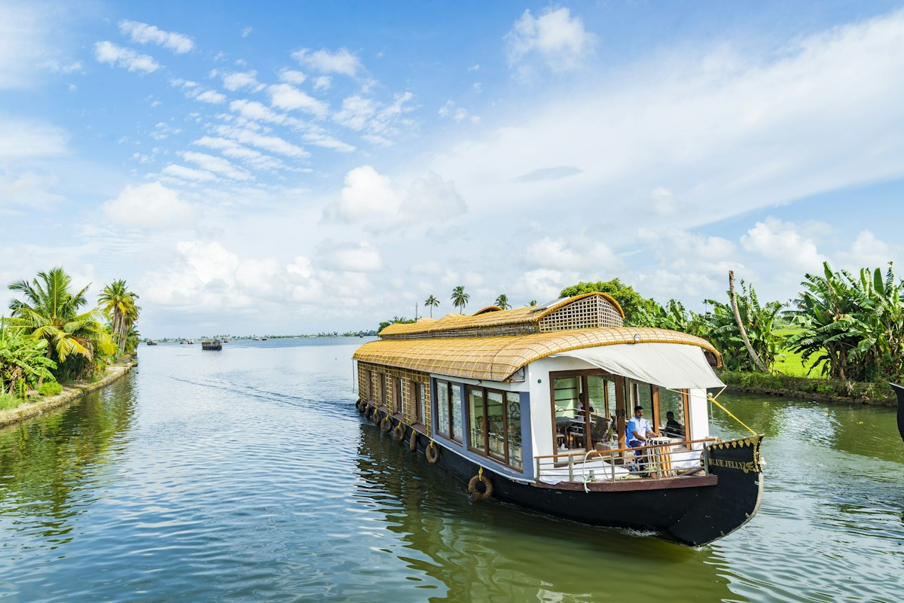

ALLEPPEY / ALAPPUZHA
Alleppey
Lakes, lagoons and palm-lined canals. Discover the backwater landscape, houseboats and the life along the water.
SOUTH KERALA · THROUGH LOCAL EYES
Palm-lined waterways. Salt in the air. A different rhythm.
Get to know South Kerala with someone who calls it home.
A FAMILIAR FACE IN AN UNFAMILIAR PLACE
Welcome to my corner of South Kerala. This is a place to discover the landscapes, local life and small moments that make the region special — with a local guide to help you find your way.
A personal introduction, the guide’s name and a portrait will be added here soon.
Get to know your local guide ↗WATERWAYS, COASTLINES & EVERYDAY WONDERS
Lakes, lagoons and palm-lined canals. Discover the backwater landscape, houseboats and the life along the water.

A lakeside village, peaceful waterways and a bird sanctuary — a quieter window into Kerala’s backwater life.
The coastal gateway to the backwaters. Begin or end your Kerala experience here, as in the reference itinerary.
Inspired by the Cochin → Kumarakom → Alleppey → Cochin route. Explore the places at your own pace; contact your guide for details.
LEAVE A LITTLE ROOM FOR WONDER
A conversation by the water. The aroma of fresh spices. Watching the day turn gold. Sometimes, the smallest moments tell the biggest stories.
Give yourself time to notice the life along the waterways.
Discover the everyday details that make a place feel alive.
Let curiosity lead you to something you didn’t expect.
A DIFFERENT WAY TO GET AWAY
We believe in taking the little detour. Staying for another cup. Meeting the people who make a place. There’s more to a place than a checklist — leave space to enjoy it.
Discover the everyday magic behind the well-known sights.
Make time for the views, conversations and places that interest you.
Bring landscapes, culture and time to unwind into one journey.
A GOOD JOURNEY STARTS WITH A HELLO
Have a question about exploring South Kerala?
Direct contact details will be available here soon.
Meet your guide. Ask a question. Find your way.